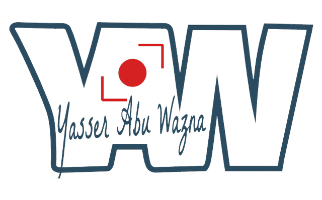

REEL 01
● Now showing
01



YAW STUDIO · Gaza
Four documentaries made in Gaza. Each one shot over months, not days, with the same families across the whole of it.
Reported pieces from Gaza — written and photographed on the ground.
Every morning the line forms at five. By six it has folded twice around the block, and by seven the argument about who was first has already been settled by whoever is oldest.
It is not a story about water. It is a story about the order people build when nothing else is ordered.
The room was a storage bay. It has running water, which the east wing no longer has, and so it became the place where limbs are made.
Forty-one children are on the list. Most have waited since the summer, when the casting material stopped at the crossing.

The warehouse has one window and no door. The teacher brings the door with her, a sheet of plywood she leans across the opening when the wind comes off the sea.
She has taught the same forty-two children for three years, in four different buildings.
Photography from Gaza — explore by moving through the field.
Featured · Published · Broadcast
From the first frame
to the final cut.